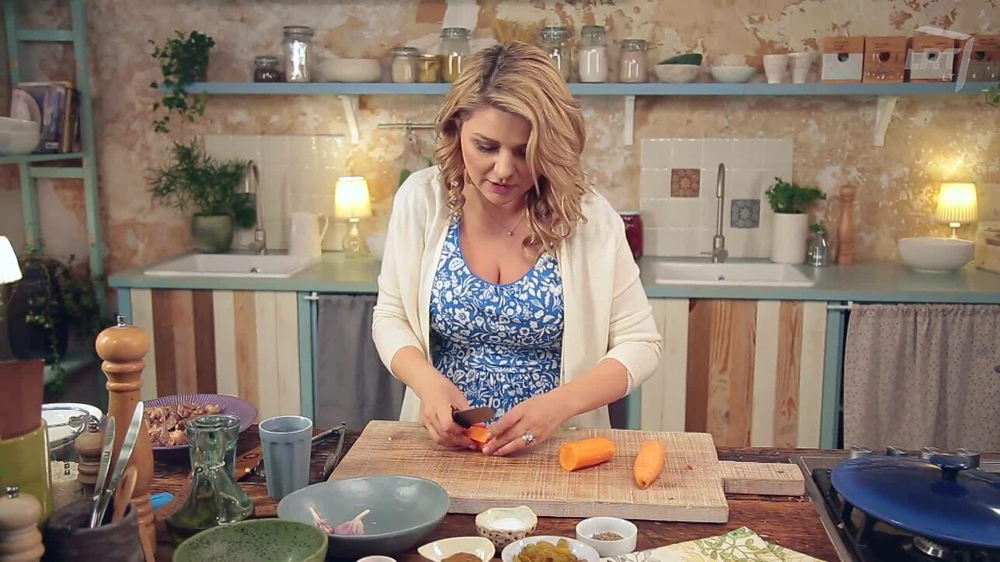

Welcome to Virtuvė
Receptai - Beatos virtuvė
2020.10.28 08:068241 Receptai Studija PARDUOTUVĖ Ledai Video Reikės: 1 pakelio šokoladinio pudingo „Dr. Oetker“ 0,5 l pieno 600 g slyvų 130 g cukraus 1 cinamono lazdelės 2 gvazdikėlių 200 ml plakamosios grietinėlės .....
Desertas su šokoladiniu pudingu ir troškintomis slyvomis
(0)Yra toks spalvingas sluoksniuotas angliškas desertas trifle. Čia rudeninė jo variacija su šokoladiniu pudingu ir troškintomis slyvomis.
Data 2020 spalio 9 , autorius Beata Nicholson ( 6 balsai, vidurkis: 4,33 iš 5)Loading...
Šilkinė košė su moliūgais ir šonine
(0)Šilkinė košė yra kuo tikriausias rudeninis namų virtuvės hitas. Moliūgas ištirpsta sultinyje, o sultinyje išbrinkusios perlinės kruopos būna švelnios ir Daugiau
Data 2020 spalio 1 ( 16 balsai, vidurkis: 3,75 iš 5)Loading...
Apverstas pyragas (tarte tatin) su kriaušėmis
(4)Tarte tatin toks prancūziškas ponaitis kepinių skiltyje. Nors atrodo pretenzingas, iš tiesų yra labai sukalbamas ir be galo skanus . Daugiau
Data 2020 rugsėjo 15 ( 6 balsai, vidurkis: 3,00 iš 5)Loading...
Vištų blauzdelės su vynuogėmis ir moliūgais
(6)Puikiausia vienos skardos rudeninė vakarienė. Vištų blauzdelės su keptomis vynuogėmis ir saldžiu moliūgu nuostabiai dera.
Data 2020 rugsėjo 5 ( 13 balsai, vidurkis: 4,00 iš 5)Loading...
Kefyro panakota su braškėmis ir rabarbarais
(0)Kefyro panakota su braškėmis ir rabarbarais vasariškai lengva ir taip paprastai pagaminama, kad pavyks, net jei tokio deserto niekada Daugiau
Data 2020 rugpjūčio 20 ( 8 balsai, vidurkis: 4,50 iš 5)Loading...
Gardus sviestinis obuolių trupiniuotis (crumble)
(3)Obuolių trupiniuotis mūsų namuose pats populiariausias desertas. Svarbiausia išmokti pasidaryti skaniausius sviestinius trupinius.
Data 2020 rugpjūčio 11 ( 29 balsai, vidurkis: 3,59 iš 5)Loading...
Meksikietiški mėsainiai su keptais ananasais
(0)Šių mėsainių su keptais ananasais receptą įkvėpė Meksikos skoniai ir spalvos. O tas gardus salsvas ananasas mmm!
Data 2020 rugpjūčio 6 ( 3 balsai, vidurkis: 4,33 iš 5)Loading...
Pieniška voveraičių sriuba
(0)Švelni ir vasariška voveraičių sriuba, kurioje dainuoja gardūs ingredientai šviežios bulvės, morkos ir žirneliai. Ši pieniška sriuba tikras Daugiau
Data 2020 rugpjūčio 3 ( 4 balsai, vidurkis: 3,00 iš 5)Loading...
Prancūziškas sumuštinis su varškės sūriu ir avietėmis
(2)Šis sumuštinis subalansuotas karališkiems vasariškiems savaitgalio pusryčiams. Prancūziškas sumuštinis su vasariškais lietuviškais akcentais, su varškės sūriu ir avietėmis.
Data 2020 liepos 24 ( 5 balsai, vidurkis: 2,60 iš 5)Loading...
Daržovingas plovas su jautiena ir sultiniu
(0)Šis daržovingas plovas su jautiena ir sultiniu greitai paruošiamas bei labai gardus. Kvapnus ir drėgnas, jame išbrinkę ryžiai labai Daugiau
Data 2020 liepos 23 ( 5 balsai, vidurkis: 4,80 iš 5)Loading...
Rytietiška kopūstų sriuba su frikadelėmis
(1)Rytietiška kopūstų sriuba su kukuliukais, kurią tikrai pamilsite. Gaivi, soti ir dar labai įdomaus skonio. Skirta ir meškai sutramdyti, ir Daugiau
Data 2020 liepos 8 ( 11 balsai, vidurkis: 3,64 iš 5)Loading...
Marinuotos šoninės juostelės su gaiviomis kopūstų salotomis
(0)Karamelizuota šoninė ir gaivios kopūstų salotos. Tobulas derinys grilio vakarėliui, kuris pavyks be didelių pastangų.
Data 2020 liepos 3 ( 6 balsai, vidurkis: 4,17 iš 5)Loading...
Šalta avokadų sriuba su pasukomis
(0)Šalta vasaros sriuba tiems, kurie negali gyventi be avokadų ir nori valgyti lengvai ir sveikai. Su pasukomis paruošta šaltsriubė bus Daugiau
Data 2020 birželio 27 ( 9 balsai, vidurkis: 4,67 iš 5)Loading...
Braškių uogienė su vanile
(0)Vasarą į stiklainius! Pamatysite, kaip rudenį ar žiemą pradžiugins ši braškių uogienė su vanile. Ir pusryčiams, ir desertui tiks.
Data 2020 birželio 25 ( 6 balsai, vidurkis: 3,83 iš 5)Loading...
Vaikų svajonė: spalvotų lietinių tortas su švelniu varškės kremu
(0)Stirta spalvingų lietinių, švelnutėlis varškės kremas, želė brangakmeniai ir uogos. Atraskite šį tortą šią vasarą – jis sukurtas nerūpestingam vaikystės Daugiau
Data 2020 birželio 19 ( 5 balsai, vidurkis: 4,20 iš 5)Loading...
Gaivūs kokteiliai su šaltai brandinta kava
(0)Kai vasaros dienos karštos, norisi gaivos ir vėsos. Jei dar nesate bandę, pasiruoškite šaltai brandintą kavą. Ja galėsite ilgai mėgautis, Daugiau
Data 2020 birželio 18 ( 3 balsai, vidurkis: 4,67 iš 5)Loading...
Makaronų apkepas su vištiena ir daržovių sultiniu
(4)Greitas makaronų apkepas su vištiena yra išsigelbėjimas, kai laiko suktis virtuvėje nėra. Šis patiekalas su sultiniu, kuris už jus ir Daugiau
Data 2020 birželio 17 ( 10 balsai, vidurkis: 4,30 iš 5)Loading...
Vištienos ir daržovių šašlykas su kepsnių padažo glazūra
(0)Vištienos šašlykas tiems, kurie nori kurti grilių čia ir dabar. Tereikia sumauti viską ant iešmelių, o baigiant kepti užtepti kepsnių Daugiau
Data 2020 birželio 12 ( 3 balsai, vidurkis: 5,00 iš 5)Loading...
Nekeptas pyragas su braškėmis ir varškės kepure
(4)Braškės, varškė, sausainių pagrindas derinys sukurtas tam, kad vasaros pradžia būtų kaip šventė. Nekeptas pyragas su braškėmis ir varškės Daugiau
Data 2020 birželio 6 ( 5 balsai, vidurkis: 4,40 iš 5)Loading...
Kefyre marinuoti vištienos kepsniai
(7)Vištiena marinuota kefyre ir paprasta, ir labai skanu. Minkštutėliai vištos krūtinėlės kepsniai tiesiog tirpsta burnoje. Tikras namų virtuvės hitas.
Data 2020 birželio 3 ( 15 balsai, vidurkis: 3,80 iš 5)Loading...
Lazanija su cukinijomis, baklažanais ir mocarela
(5)Žalia ir labai vasariška lazanija su keptomis cukinijomis ir baklažanais. Daržovių joje labai daug ir mėsos čia visai nepasigesite! O Daugiau
Data 2020 birželio 1 ( 11 balsai, vidurkis: 3,73 iš 5)Loading...
Karibų salotos su kokosų pieno padažu
(2)Tai tikrai fantastiškos Karibų salotos su bananais, ananasais ir labai neįprastu, bet skaniu padažu. Šį receptą kažkada rodėme mano laidoje Daugiau
Data 2020 gegužės 30 ( 9 balsai, vidurkis: 4,00 iš 5)Loading...
Laukinės lašišos sriuba
(2)Tai dabar apie gerą žuvienę… Aišku, jūs galite išsivirti ir su bet kokia kita žuvimi, bet jei virsite iš laukinės Daugiau
Data 2020 gegužės 20 ( 6 balsai, vidurkis: 3,83 iš 5)Loading...
Kreminio sūrio ledai su mangais ir bananais
(5)Na nežinau kaip jūs, bet mano vaikai kai atšyla oras gali ir nori valgyti ledus kasdien. Dar jie labai mėgsta Daugiau
Data 2020 gegužės 7 ( 11 balsai, vidurkis: 4,00 iš 5)Loading... Rodyti senesnius įrašus 26097 26103 26104 Kategorijos Apkepai Bemėsiams pirmadieniams Blynai, blyneliai Bulvių patiekalai Daržovių patiekalai grybai Gėrimai ir kokteiliai Atsakingo vartojimo Gaivieji Greitai Grill / Lauke Kažko nevalgantiems Be gliuteno Be kiaušinių Be pieno Kepta garuose Kruopos KVIEČIU Į SVEČIUS Lietuviški patiekalai Maistas į mokyklą Makaronai, pica Koldūnai Marinatai Mėsa Aviena Jautiena, veršiena Kalakutiena Kiauliena Vištiena, paukštiena Moliūgai Padažai, užpilai, pagardai Pusryčiai Pyragai, kepiniai Duona Keksiukai Pyragai, pyragėliai Sausainiai Sūrūs kepiniai Tortai Receptai iš bibliotekos Receptai iš TV laidų Saldžiai Desertai Ledai Šokoladiniai Salotos, mišrainės Smidrai Sriuba Sūrio mėgėjams Sutramdyta meška Šventės Gimtadienis Kalėdos Velykos Troškiniai Uogienė Užkandžiai Vaikų darželis Varškė karalienė Viskas suskaičiuota Žuvis silkė Top 5 receptai
Pačios skaniausios cinamoninės bandelės (82)
Gruziniškas chačapuris lietuviškai (62)
Vištiena Cacciatore arba labai greitas itališkas vištienos troškinys (50)
Nekeptas varškės tortas su želė ir braškėmis (47)
Pasta alla Norma (21)
Top 5 straipsniaiRita: Trys filmai, per kuriuos labiausiai verkiau
Tomas: Jurgis ir drakonas (papildyta vertimu į LT)
Blynų pasaulyjeeee
Svečias mano vyras Tomas apie Lietuvą ir vyrišką maistą
Daugiau daržovių jau knygynuose ir parduotuvėse (304)
Beatos blogasMama irgi žmogus arba greiti kepiniai iš „Beatos virtuvė“ miltinių mišinių (8)
Nauja rubrikaKą ir kodėl rekomenduoja „Beatos virtuvė"?
Receptai Studija PARDUOTUVĖ Ledai Video Mūsų draugai: Visos teisės priklauso Beatai Nicholson. | Pagaminta be LEDO . Apie mus Kontaktai Privatumo politika
Informuojame, kad šioje svetainėje yra naudojami slapukai (angl. cookies). Toliau naršydami svetainėje arba paspausdami mygtuką Sutinku, Jūs sutinkate su slapukų naudojimu. Savo duotą sutikimą bet kada galėsite atšaukti pakeisdami savo interneto naršyklės nustatymus ir ištrindami įrašytus slapukus. Daugiau informacijos apie slapukus rasite čia Sutinku
